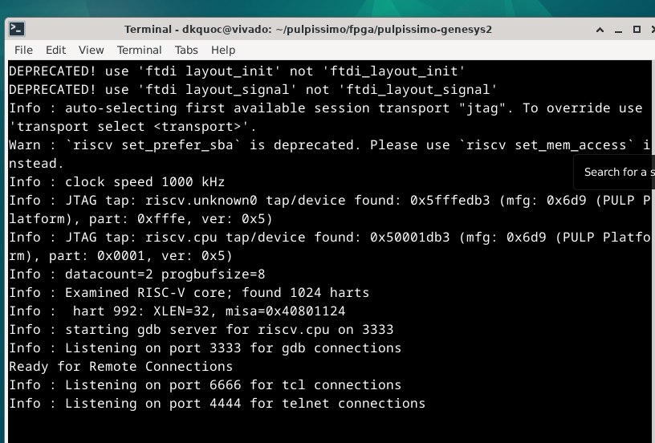

Pulpissimo
Installation
Error may appear:
Numpy error
/home/*.*/.local/lib/python3.10/site-packages/openpyxl/compat/numbers.py
Solution: Go to file numbers.py then edit numpy.float = float
GCC error
((vp::trace *)(trace_ptr))->fatal(msg); : GCC version error - select gcc 9
Note
Installing Multiple GCC Versions
sudo apt install gcc-9 g++-9 gcc-10 g++-10 gcc-11 g++-11 -y
Clone example
Put this example in pulpissimo directory
git clone https://github.com/pulp-platform/pulp-runtime-examples.git
Implement code
Prepare the environments before running any example
source ./pulp-runtime/configs/pulpissimo.sh
source ./env/pulpissimo.sh
source ./pulp-sdk/configs/pulpissimo.sh
source ./pulp-sdk/configs/platform-rtl.sh
source ./pulp-sdk/pkg/sdk/dev/sourceme.sh
source ./pulp-sdk/configs/fpgas/pulpissimo/genesys2.sh
source ./pulp-sdk/sourceme.sh
source setup/vsim.sh
Hello example
make clean all run platform=gvsoc # run code on virtual platform
Uart-send example
make clean all io=uart # build binary file
Generate .vcd file to see gtkwave
make clean all run platform=gvsoc runner_args=--vcd
Error about runner
Solution: Open vp_runner.py in path: pulpisisimo/pulp_sdk/pkg/sdk/dev/install/ws/python copy the whole commands in this vp_runner file and paste to your vp_runner.py.
Generate bitstream
Prerequisite
Vivado 2023.2 Enterprise (You can check vivado installation instruction).
Following these steps below:
make scriptsin folder pulpissimoInstall Genesys2 board (if haven’t done). Open vivado, select
WindowthenTcl console. In the console invoke commandxhub::refresh_catalog [xhub::get_xstores xilinx_board_store] xhub::install [xhub::get_xitems]
Then install Genesys2 board by going to
ToolsthenVivado store. Search for Genesys2 and install.Add the line below before:
line 9 pulpissimo/fpga/pulpissimo-genesys2/tcl/run.tclline 11 pulpissimo/fpga/pulpissimo-genesys2/tcl/common.tclline 21 pulpissimo/fpga/pulpissimo-genesys2/ips/xilinx_clk_mngr/tcl/run.tclline 16 pulpissimo/fpga/pulpissimo-genesys2/ips/xilinx_slow_clk_mngr/tcl/run.tclset_param board.repoPaths [get_property LOCAL_ROOT_DIR [xhub::get_xstores xilinx_board_store]]
Invoke command in folder
fpga:make genesys2
if you have an error:
ERROR: [Runs 36-527] DCP does not exist: /home/ryan/pulpissimo/fpga/pulpissimo-genesys2/ips/xilinx_slow_clk_mngr/xilinx_slow_clk_mngr.gen/sources_1/ip/xilinx_slow_clk_mngr/xilinx_slow_clk_mngr.dcp
Then go to
pulpissimo/fpga/pulpissimo-genesys2/ips/xilinx_clk_mngrand invoke commands:make clean make all
Note
All similar errors can use the solution above.
Then
make genesys2again and wait until it shows error:ERROR: [Synth 8-9123] an enum variable may only be assigned the same enum typed variable or one of its values [.../pulpissimo/.bender/git/checkouts/pulp_soc-125142425fefd4e5/rtl/pulp_soc/soc_interconnect.sv:277] at synthesis state.
Add line below before line 388 in
pulpissimo/.bender/git/checkouts/axi-xxx/src/axi_pkg.svMY_CUT = MuxAw | MuxAr | MuxW,
Change line 277 in
pulpissimo/.bender/git/checkouts/pulp_soc-xxx/rtl/pulp_soc/soc_interconnect.svtoLatencyMode: axi_pkg::MY_CUT,
Run again
make genesys2
The bitstream is generated in
pulpissimo/fpga
Install Cable Drivers (Linux Only)
Upload bitstream
Open Vivado, then go to
Open Hardware Managerand open target.Click
Program Deviceand select bitstream file.Similarly, select
Program Deviceto upload bitstream file.
Debug with openocd
Add
192.168.1.177/32to AllowIPs in your wiregaurd configuration fileOpen remmina and connect to site
192.168.1.177with user and password allocated in discordOpen terminal and change directory to
pulpissimo/fpga/pulpissimo-genesys2/, then invoke command:openocd -f openocd-genesys2.cfg
if an error appear
openocd-genesys2.cfg:38: Error: in procedure 'script' at file "embedded:startup.tcl", line 28 at file "openocd-genesys2.cfg", line 38
Solution: Comment line 38 and rerun
Go to
uart/sendexample of pulpissimo folder and build (From now, do on local machine):cd pulp-runtime-examples/periph/uart/send make clean all io=uart
Start RISC-V GDB pointing to your ELF binary:
riscv32-unknown-elf-gdb build/test/test
Then invoke:
For remote board
target extended-remote 192.168.1.177:3333For local board:
target remote localhost:3333
Load the binary into PULPissimo’s main memory and start execution:
load continueOpen site
192.168.2.203and use eitherHerculesorPuttyto check the UART output for results.
Congratulations! 

Tip
Ctrl + Cto stopcontinuestatusquitto get out of debugging.
Putty installation
Active Universe storage on ubuntu system
sudo add-apt-repository universe
Install putty
sudo apt install putty
Initialize putty
putty
Select Serial to use serial connection. Then set up port and baudrate. Hit open to run.
Note
If a font error appears, just go to ‘Fonts’ on the left sidebar in PuTTY and configure your font.
How to find Device Dev Path on Linux
Open new terminal and invoke commands below
for sysdevpath in $(find /sys/bus/usb/devices/usb*/ -name dev); do
(
syspath="${sysdevpath%/dev}"
devname="$(udevadm info -q name -p $syspath)"
[[ "$devname" == "bus/"* ]] && exit
eval "$(udevadm info -q property --export -p $syspath)"
[[ -z "$ID_SERIAL" ]] && exit
echo "/dev/$devname - $ID_SERIAL"
)
done
All dev paths will appear:
/dev/ttyACM0 - STMicroelectronics_STM32_STLink_0668FF485157717867163038
/dev/sda - MBED_microcontroller_0668FF485157717867163038-0:0
/dev/input/event13 - SONIX_M87_keyboard
/dev/input/event16 - SONIX_M87_keyboard
/dev/input/event14 - SONIX_M87_keyboard
/dev/input/event12 - SONIX_M87_keyboard
/dev/input/event15 - SONIX_M87_keyboard
/dev/input/mouse3 - SONIX_M87_keyboard
/dev/input/event11 - SONIX_M87_keyboard
/dev/input/event7 - Logitech_USB_Receiver
/dev/input/mouse2 - Logitech_USB_Receiver
/dev/video3 - Azurewave_USB2.0_HD_IR_UVC_WebCam_200901010001
/dev/video2 - Azurewave_USB2.0_HD_IR_UVC_WebCam_200901010001
/dev/video1 - Azurewave_USB2.0_HD_IR_UVC_WebCam_200901010001
/dev/video0 - Azurewave_USB2.0_HD_IR_UVC_WebCam_200901010001
References
[1]. PULPissimo_Gen2_Setup_Guide